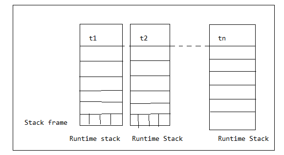
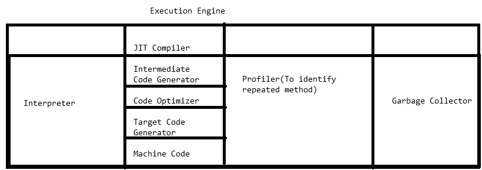

Various Memory areas of JVM :
- Whenever JVM runs a program it needs memory to store several things like byte code , objects , variables etc.
- Total JVM memory organized in the following 5 categories
- Method Area
- Heap Area
- Stack Area
- PC Registers(Program Counter)
- Native Method Stack
Method Area :
- Method area stores Runtime constant pools, variables and methods information, static variables, bytecode of classes and interfaces loaded by JVM .
- Method area will be created at the time of JVM set up .
- This memory area will be shared by all threads (shared / global memory)
- This memory area need not be continuous .
Heap Area :
- It is the main important memory area to the programmer .
- Heap area will be created at the time of JVM start up .
- Heap area need not be continuous .
- It will be shared by all threads (global | shared memory) .
- All objects and corresponding instance variables will be stored in the Heap memory .
- Every Array in java is an object and hence Arrays will be stored in the Heap memory .

Program to display Heap Memory Statistics :
- A java application can communicate with JVM by using Runtime object .
- Runtime class is a Singleton class present in java.lang package
- We can create Runtime object by using getRuntime() method .
Runtime r = Runtime.getRuntime()
- Once we got Runtime object we can call the following methods on that object .
- maxMemory():
- It returns no. of bytes of max memory allocated to the Heap .
- totalMemory():
- It returns no. of bytes of total memory allocated to the Heap (initial memory)
- finalMemory():
- It returns no. of bytes of free memory present in the Heap
- Note: Default Heap size 64 MB
How to Set Max and Min Heap Size ?
- Heap memory is final memory and based on our requirement we can increase and decrease Heap size .
- We can use the following flags with Java Command .
- -Xmx : To set maximum Heap size i.e , maxMemory() .
Ex: java -Xmx128m HeapDemo
- This cmd will set 128MB as max Heap size
- Output: Max Memory : 127
- Total Memory : 4
- Free Memory : 4
- Consumed Memory : 0
- -Xms : To set minimum Heap size i.e , totalMemory() .
Ex: java -Xms64m HeapDemo
- This cmd will set min. Heap size as 64MB
- Ex: java -Xmx128 -Xms64m HeapDemo
- Output: Max Memory : 127
- Total Memory : 63
- Free Memory : 53
- Consumed Memory : 0
Stack Memory :
- For every thread JVM will create a separate stack . Runtime stack will be created automatically at the time of thread creation .
- All method calls and corresponding local variables, intermediate results will be stored in the Stack .
- For every method call a separate entry will be added to the stack and the entry is called Stack Frame .
- After Completing all method the corresponding entry from the stack will be removed .
- After completing all method calls just before terminating the thread runtime stack will be destroyed by the JVM .
- The data stored in the stack is private to the corresponding thread .

Stack Frame Structure :
- Each Stack Frame contains 3 parts .
- Local variable Array
- Operand Stack
- Frame Data
Local Variable Array :
- It contains all parameters and local variables of the method .
- Each slot in the array is of 4 bytes .
- Values of type int, float and reference occupy one entry in the array .
- Values of type long and double occupy 2 consecutive entries in array .
- byte,short and char values will be converted to int type before Storing and occupy one slot .
- But the way of storing boolean values is varied from JVM to JVM .
Operand Stack :
- JVM uses operand stack as workspace .
- Some instructions can push the values to the operand stack and some instructions pop the values from operand stack and store result once again to the operand stack .
Frame Data :
- Frame Data contains all symbolic references(Constant pool) related to that method .
- It also contains a reference to exception table which provides the corresponding catch block information in the case of exceptions .
PC(Program Counter) Registers:
- For every thread a separate PC register will be created at the time of thread creation .
- PC registers contain address of current executing instruction . Once instruction execution completes automatically PC register will be incremented to hold address of next instruction .
Native Method Stacks :
- For every thread JVM will create a separate native method stack .
- All native method calls invoked by the thread will be stored in the corresponding native method stack .
- Note 1: Method area , heap and stack are considered as major memory areas w.r.t programmer's view .
- Method area and heap area are for JVM, where as stack, PC registers and native method stack are for thread i.e one separate heap for JVM, one separate method area for every JVM, one stack for every thread , one separate PC register for every thread and one separate native method stack for every thread .
- static variables will be stored in method area where as instance variables will be stored in heap area and local variables will be stored in stack area .
Execution Engine :
- This is central component of JVM .
- Execution Engine is responsible to execute java class files.
- Execution engine mainly contains 2 components for executing java classes .
- Interpreters
- JIT compiler
Interpreter:
- It is responsible to load byte code and interpret into machine code(Native code) and execute that machine code line by line .
- The problem with interpreter is it interprets every time even same method invoked multiple times, which reduces performance of the system .
- To overcome this problem SUN people introduced JIT compiler in 1.1 version
JIT Compiler:
- The main purpose of JIT compiler is to improve performance .
- Internally JIT Compiler maintains a separate count for every method .
- Whenever JVM come across any method call first that method will be interpreted normally by the interpreter and JIT compiler increments the corresponding count variable .
- The process will be continued for every method . Once if any method count reaches threshold value then JIT compiler identifies that method is repeatedly used method .
- Immediately, JIT compiler compiles that method and generates the corresponding native code .
- Next time, JVM come across that method call then JVM directly use native code and executes it instead of interpreting once again . So that performance of the system will improved .
- The threshold count varying from JVM to JVM . Some advanced JIT compilers will recompile generated native code if count reaches threshold value second time . So that more optimized machine code will be generated .
- JVM interprets total program line by line atleast once .
- JIT Compiler is applicable only for repeatedly invoked methods but not for every method .

JNI(Java Native Interface)
- JNI acts as bridge(mediator)for java method call and corresponding native libraries